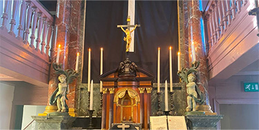
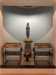
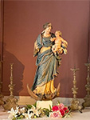
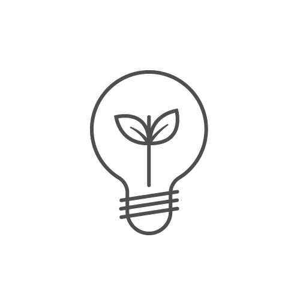
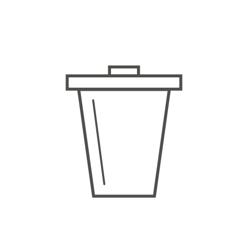
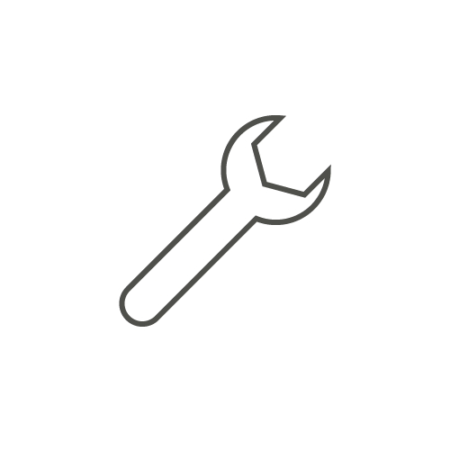
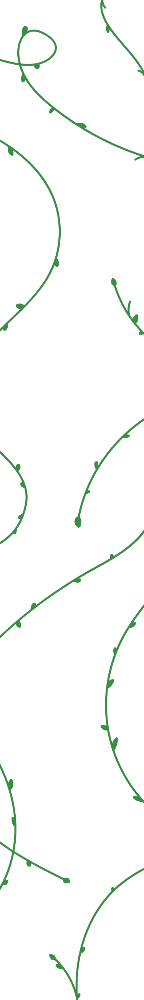

Groene kerken zijn duurzaam omdat ze zich richten op milieubewuste praktijken en principes die helpen bij het verminderen van hun ecologische voetafdruk en het bevorderen van verantwoordelijkheid voor de planeet. Hier zijn enkele redenen waarom groene kerken duurzaam zijn:

Duurzaamheid


De duurzaamheidsinspanningen van groene kerken dragen niet alleen bij aan een gezonder milieu, maar dienen ook als een inspiratiebron voor hun gemeenschappen en als een voorbeeld van hoe geloof en ecologische verantwoordelijkheid hand in hand kunnen gaan.



Energie-efficiëntie: Groene kerken investeren vaak in energiebesparende maatregelen, zoals het gebruik van zonnepanelen, LED-verlichting, en verbeterde isolatie, om hun energieverbruik te verminderen.
Afvalvermindering: Ze promoten hergebruik en recycling, en verminderen verspilling door bijvoorbeeld compostering en bewust gebruik van materialen.
Milieubewuste bouw en renovatie: Bij de bouw of renovatie van kerkgebouwen wordt rekening gehouden met duurzame bouwmaterialen en ontwerpprincipes om de impact op het milieu te minimaliseren.
Milieueducatie: Groene kerken bieden educatieve programma's en informatie aan hun gemeenteleden om bewustwording te vergroten en milieuvriendelijke gewoontes te bevorderen.
Zorg voor de schepping: Ze integreren bijbelse principes van rentmeesterschap over de schepping in hun geloof en liturgie, wat leden aanspoort om zorgvuldig om te gaan met de natuur.
Gemeenschapsbetrokkenheid: Groene kerken zijn vaak actief betrokken bij milieu-initiatieven in hun gemeenschappen, zoals het opruimen van zwerfafval, het planten van bomen en het ondersteunen van lokale natuurbeschermingsprojecten.
